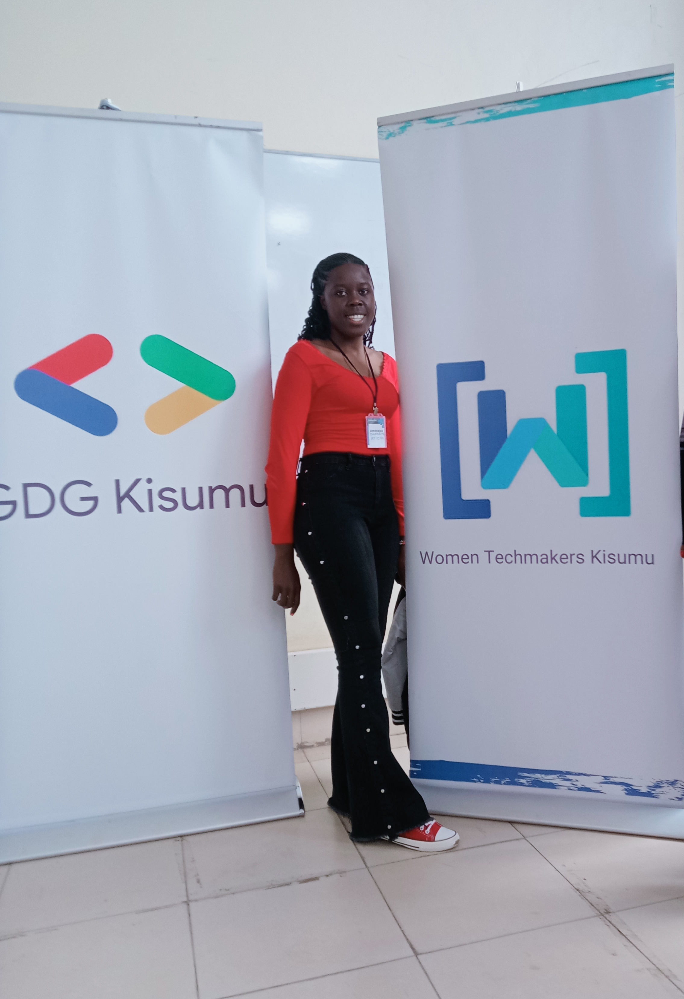
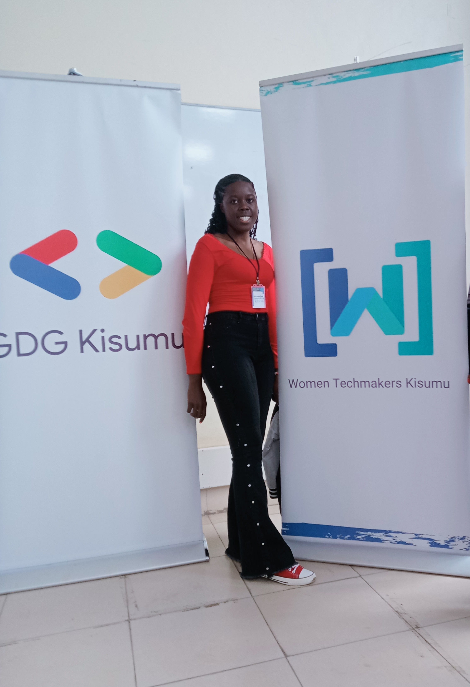

About Me
Hello! I'm Doreen, a passionate software engineer with a unique twist – I'm also a skilled hairdresser. My journey into the world of coding began when I was young, tinkering with my first computer and marveling at the endless possibilities it presented. As I grew older, I discovered another creative outlet in hairdressing, finding joy in transforming people's looks and boosting their confidence.
These two seemingly different paths have actually fueled my creativity in remarkable ways. The precision and problem-solving skills I've honed as a developer complement the artistic vision and attention to detail I've cultivated as a hairstylist. This blend of technical expertise and creative flair allows me to approach software development with a unique perspective, crafting solutions that are not only functional but also intuitive and aesthetically pleasing.

 
